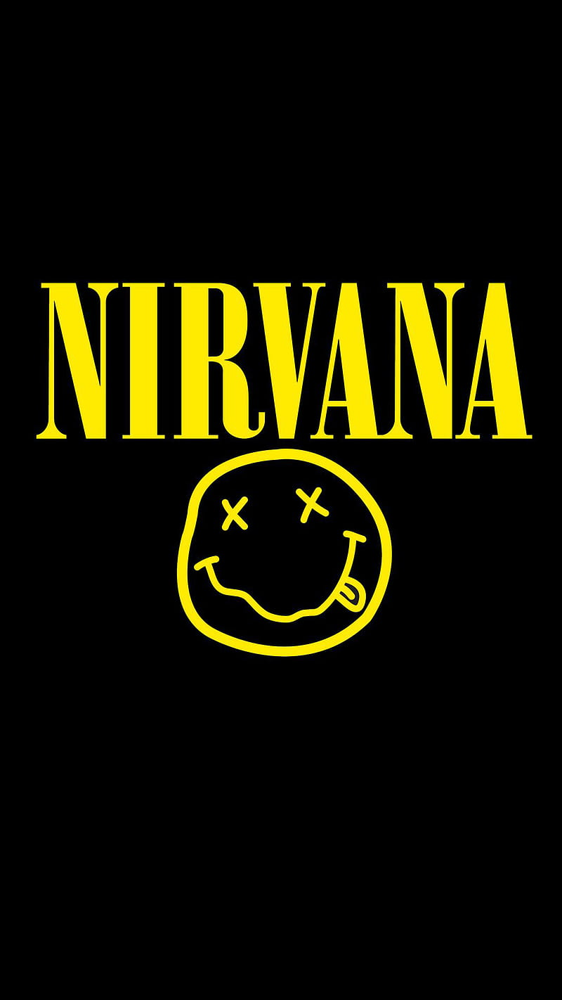

historia
Nirvana fue una banda de grunge estadounidense procedente de Aberdeen, Washington fundada por el vocalista y guitarrista Kurt Cobain y el bajista Krist Novoselic en 1987. Desde su formación, Nirvana pasó por una serie de seis cambios de baterista (del primero al último: Bob McFadden, Aaron Burckhard, Dale Crover, Dave Foster, Chad Channing y Dan Peters (que solo estuvo para hacer la canción «Sliver») hasta que en 1990 se unió, de manera definitiva, el baterista Dave Grohl. Nirvana es catalogada como una de las bandas más famosas, importantes e influyentes de la historia de la música, siendo considerada como un símbolo de su generación. A finales de la década de 1980 Nirvana se estableció como parte de la escena musical de Seattle con su álbum debut Bleach, lanzado bajo el sello independiente de Seattle, Sub Pop, en 1989 el cual vendió 5 millones de copias a nivel mundial. La banda llegó a desarrollar un sonido que se basaba en los contrastes entre versos tranquilos y coros intensos. Un año más tarde, Nirvana firmó con la discográfica DGC Records y en 1991 lanzó su segundo álbum: Nevermind. El primer sencillo del álbum, «Smells Like Teen Spirit», escaló las listas musicales e inició la explosión de lo que hasta ese momento era conocido como rock alternativo en la escena musical mundial, en un movimiento al que los medios de la época se referirían como grunge. Además de Nirvana, otras bandas de la escena musical de Seattle como Pearl Jam, Alice in Chains y Soundgarden también ganaron popularidad; como resultado, el rock alternativo se convirtió en el género dominante en la radio y la televisión musical durante la primera mitad de la década de los 90. El líder de la banda, Kurt Cobain fue denominado por los medios de comunicación como «la voz de una generación» y Nirvana como la «banda símbolo» de la Generación X. Cobain se sentía incómodo con la atención que se les brindaba y decidió enfocar la atención del público hacia la música de la banda, retando a la audiencia con su tercer álbum de estudio, In Utero. El álbum no tuvo el éxito ni las ventas esperadas y la popularidad de Nirvana disminuyó en los meses siguientes a la publicación del álbum. Sin embargo, buena parte de su audiencia alabó el interior «oscuro» de la banda, en especial después de su presentación en MTV Unplugged. La carrera de Nirvana concluyó con la muerte de Cobain en 1994, pero su popularidad creció aún más en los años posteriores. Ocho años después de la muerte de Cobain, «You Know You're Right», una demo nunca terminada que la banda había grabado dos meses antes de la muerte del cantante, escalaba las listas de radio y música de todo el mundo. En 2004 fueron colocados en el puesto nº30 en la lista de los 100 mejores artistas de todos los tiempos de la revista Rolling Stone y en el puesto nº14 según la revista Vh1. Desde su debut, la banda ha vendido más de 80 millones de álbumes a nivel mundial, incluyendo 10 millones de ejemplares de Nevermind en los Estados Unidos y 35 millones en todo el mundo. En 2014 Nirvana ingresó en el Salón de la Fama del Rock and Roll.
